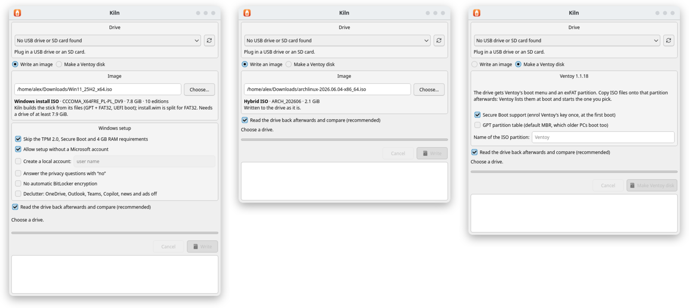

Any image, verified
Linux ISOs and disk images are written byte for byte, then read back and compared. On the command line, give it the image's SHA-256 (--sha256) and Kiln checks the image before a single byte reaches the stick.
Kiln writes any bootable image to a USB stick or SD card and reads every byte back to prove it landed. It builds Windows 11 install sticks with the setup tweaks you would otherwise go looking for, and it makes Ventoy disks that boot every ISO you copy onto them.
Windows 10 (1903) or newer · macOS 14.4 or newer on Apple silicon · Arch, Debian 13, Ubuntu 26.04, Fedora 44 · free software under the GPL v3

Linux ISOs and disk images are written byte for byte, then read back and compared. On the command line, give it the image's SHA-256 (--sha256) and Kiln checks the image before a single byte reaches the stick.
The stick is built from the ISO's files, with UEFI boot and Secure Boot left on. Skip the TPM, Secure Boot and RAM checks, set up a local account, and switch off BitLocker, OneDrive, Copilot and ads.
Kiln lays out a Ventoy disk exactly as Ventoy's own installer does, MBR or GPT, with Secure Boot support if you want it. Copy ISO files onto it and pick one at boot.
Download Kiln-…-x64-setup.exe and run it, or unpack Kiln-…-x64.zip anywhere and run kiln-gui.exe. For 64-bit Windows 10 (1903) or newer.
Kiln is not code-signed yet, so SmartScreen warns before the first start: choose More info, then Run anyway.
Download Kiln-…-arm64.dmg, open it and drag Kiln to Applications. For Macs with Apple silicon on macOS 14.4 or newer.
Kiln is not signed with an Apple Developer ID yet, so macOS refuses the first start. Try to open Kiln once, then choose Open Anyway in System Settings, Privacy & Security.
| Arch, CachyOS | sudo pacman -U kiln-*.pkg.tar.zst |
|---|---|
| Debian 13, Ubuntu 26.04 | sudo apt install ./kiln_*_amd64.deb |
| Fedora 44 | sudo dnf install ./kiln-*.x86_64.rpm |
Each package pulls in Qt 6 and polkit through your package manager.
Every release lists each file's SHA-256 and carries the source of Kiln and of every GPL and LGPL component built into it.
Kiln erases the whole drive you pick. Check the drive's name before you write. Kiln is early software: keep backups of anything you care about.